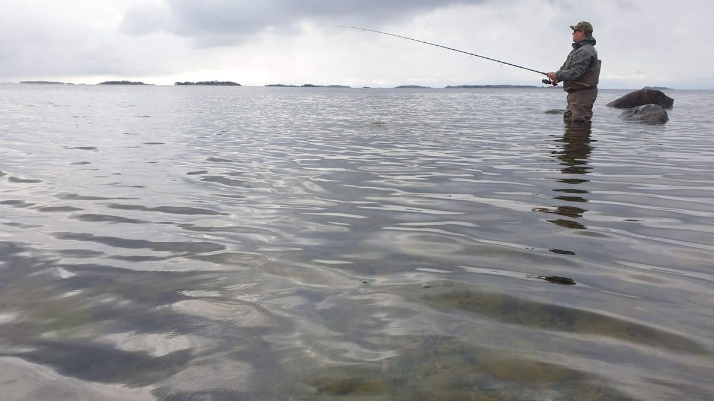
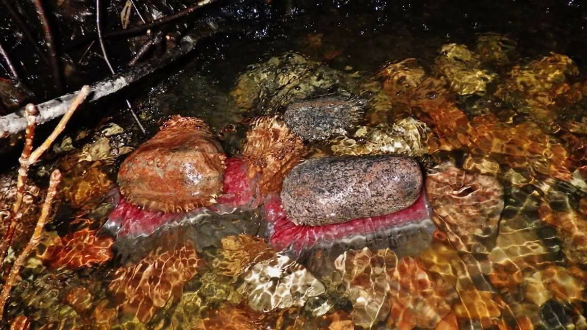
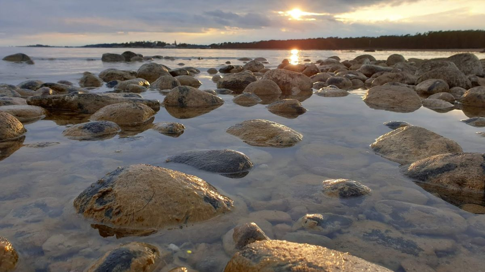
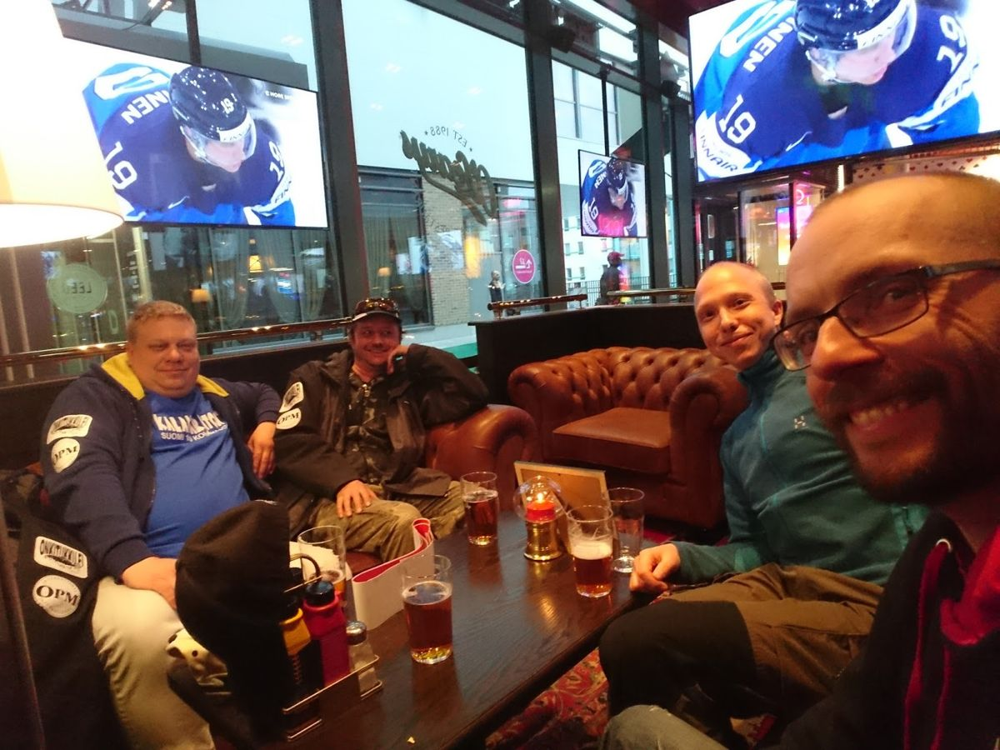
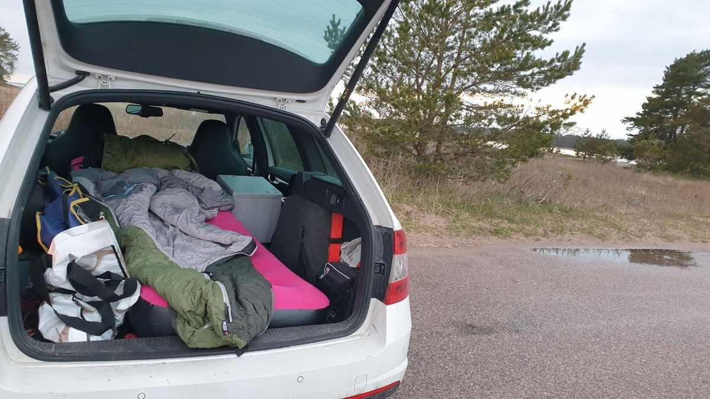
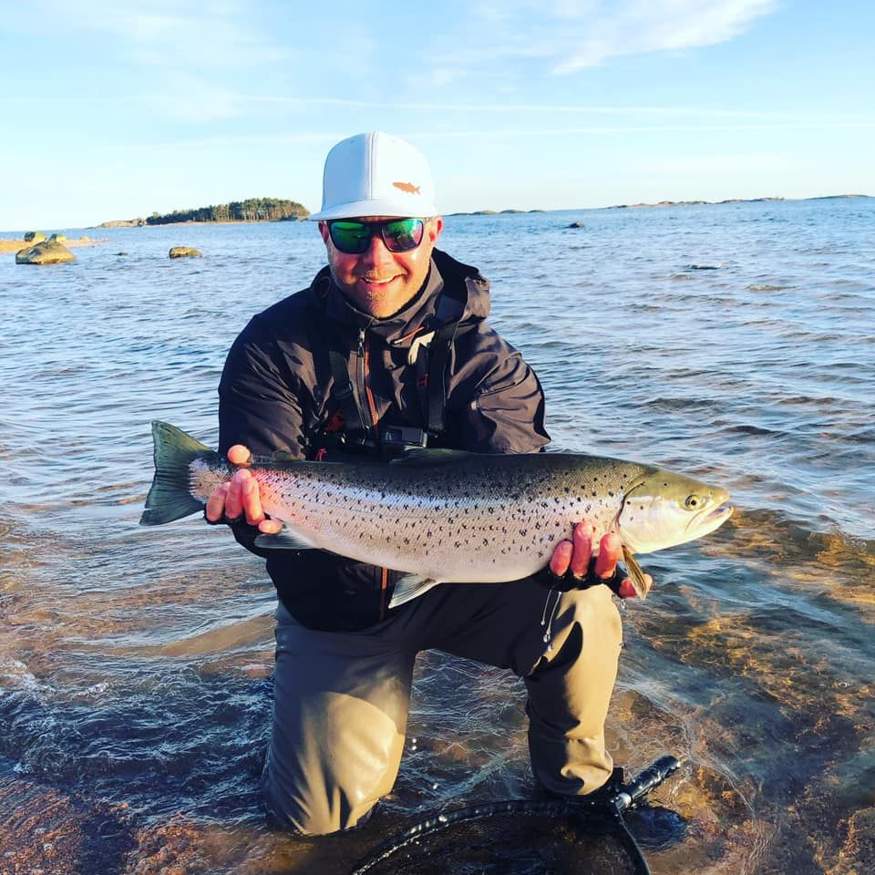

Blogitekstit · Huhtikuu 2020
Purokunnostajat taimenjahdissa - kolea päivä ja yö

Nyt sattuu!
Herään suonenvetoon ja siihen, että koko kroppani tärisee kylmyydestä. Auton ikkunat ovat huurussa ja hetkestä puuttuisi vain naisen käden painallus huuruun. Tuo vaatisi sen, että autossa seuranani olisi ja Rose eikä unohtaa saa laivaa tai jäävuortakaan. Taustalla kohisi meri.
Allani Rosen sijaan oli ilmat ulos laskenut pinkki matto, ei pehmeä ilmaa täynä oleva patja jollaisen päälle kömmin viluissani.
Nousin autosta, laitoin saappaat jalkaani ja tuijotin tyyntä merta. Vetäisinkö jalkaan kosteat ja viileät kahluuhousut ja uppoutuisin veden viileään syleilyyn? Tuijotin hetken kasvojani huurteista autonikkunaa vasten;
Mä lähden kotiin.
Yöllä kotona kömmin sängyn sijasta sohvalle, kello oli lähes kolme. Tähän on hyvä lopettaa tämä kalareissu ja pitkä kolea päivä.
Kuinka näihin Titanic -elokuvan suuntaisiin tunnelmiin päädyttiin, vaatii hieman avausta koko päivästä ja epistolasta.
Taimenjahtiin Markon ja Callen opein


Merten hopekyljet - upeat taimenet tarjoavat läpi vuoden upeita elämyksiä rannalta ja veneillä kalastaville. Itselleni ei rannalta taimenen kalastusreissuja ole kertynyt elämäni aikana kuin peukakoilla laskettavat määrät.
Joku voi ajatella etten osaa mitään kalastuksen tiimoilta kun pyydän apua ja vinkkejä taimenjahtiin. Totuus on, että en oikeasti tiedä siitä muuta kuin mitä olen lukenut ja katsonut videoita.
Yksi tämän vuoden teemoja on ollut uuden oppiminen ja uusiin ihmisiin tutustuminen ja heidän kanssa kalastaminen. Upeaa oli soittaa Markolle, ensimmäiseksi tuli kiitokset työstämme Longinojan eteen ja heti perään alkoi sellainen tarinointi taimenesta ettei loppua meinannut tulla.
Instagramista tunnuksen @lifeforfishing takaa löytyvä Markon kovin vinkki oli;
"Isoin asia on vaan luottaa tekemiseen." - Marko
Kiva oli jutella puhelimitse ihmisen kanssa joka on kalastanut 25 vuotta ja tutustunut erityisesti taimenen kalastukseen rannalta. Pienet nyanssit, veden virtaukset ja tuuli. Monta asiaa joita on kertynyt hänen aivojensa nystyröihin ja joita soveltamalla löytää kaloja.
"Joskus heitän kolmekin viikkoa tyhjää, mutta sitä jaksaa kun tietää palkinnon osuvan joskus kohdalle." - Marko
Sovimme Markon kanssa tapaamisen maanantaiksi Longinojalle. Haaga-Helian sillalla odottelin ja heittelin leivän palasia veteen kun näin Instagramista tutut kasvot kävelevän koululta kohti puroa. Tunnistimme toisemme jo kaukaa ja aloimme juttelemaan kuin olisimme tunteneet toisemme kauemminkin.
Heittelin leipää veteen ja näytin kuinka paikalliset taimenemot kävivät syömässä niitä virrasta. Upeat puron asukit, jotka vieraalleni olivat tutut meren rannoilta näyttäytyivät nyt lajitovereiden toimesta hieman eri ympäristössä.
Taimen, tuo purojen ja virtaavien vesien kuningatar, merien hopeakylkinen silakka-ahmatti. Monimuotoinen ja upea laji joka sopeutuu elinympäristöön niin merellä kuin urbaanissa purossakin.
Pienen kävely ja jutteluretken päätteeksi antoi Marko ottipelin, upea hilepintainen lusikkatikku.
"Tämä on ehdoton suosikkini, värissä näkyy sekä silakka että kilohaili. Luonnollinen väri, joka on suurten luonnontaimenten herkkua." -Marko
Olin myyty, tähän oli upea lopettaa hetken keskustelut selvästi asiansa osaavan kalastajan kanssa.
Ehkä joskus minäkin osaan jonkun asian yhtä hyvin kuin hän, mietin mielessäni kävellessäni ottiviehe povitaskussani kohti autoa.
Hankoniemen purokunnostaja - alueen taimenkannan palauttaja


Paikallisoppaaksi lupautui Carl-Henrik Lindqvist eli tuttavallisemme Calle on tullut tutuksi purokunnostuksien kautta. Hänen toimesta ja innoittamana on muutama Hankoniemen puro saanut uuden taimenkannan ja entisiä solisemattomia ojia on palautettu soliseviksi puroiksi. Ota instassa seurantaan @lindqvistcarlhenri
Pienten sorakuormien sisällä voi piillä purossa tulevaisuus tuhansille taimenille, näiden avulla luonnontaimenkannat kasvavat ja ruokkivat merta.
"Yhteen istutettu, muissa kahdessa luultavasti luontainen taimenkanta. Ehkä jatkossa sinne myös poikasia jos on tarvetta." - Calle
Nämä muutamat purot tulevat tulevaisuudessa ruokkimaan myös Hankoniemen taimentenkalastajien saaliita upeiden luonnontaimenten toimesta.
Saavuin Hankoon hieman yli kolme iltapäivällä, kävin kävelemässä ympäri suunnitellut yö kalastuskohdan ja rekisteröin paikkoja, joissa näkyi rakkoleväpusikoita. Calle soittikin ja kertoi saapuvansa puoli neljä rantaan.
Vaihdamme kuulumiset ja Calle kertoo miten hänen purokunnostuksensa alkoivat kalareissun jälkimainingeissa vuonna 2016.
"Asia jäi muhimaan kesän yli ja taas alkusyksystä lähdin kyselemään, olisiko yksi maanomistaja kiinnostunut tällaisesta asiasta kuin taimen puro. Maanomistaja lähti heti mukaan, jolloin lähdin selvittämään asia eteenpäin koskien lupia jne." -Calle
Ajelemme heti ensimmäiseen taimenpaikkaan, jossa jatkamme keskustelua puronkunnostamisesta.
"Syksyllä 2016 aloiteltiin jo kunnostukset tuomalla kivimateriaalia ja puhdistettiin uomasta hiekka pois. Vuoden vaihteessa oli luvat kunnossa ja alkuvuodesta myös mädin istutus luvat Ely-keskukselta, tuolloin meni myös ensimmäiset mädit puroihin, oli vuosi 2017." -Calle
Heittelemme kallioisella rannalla kymmenisen minuuttia ja toteamme, että paikan vaihto. Liikaa roskaa pinnassa, tuuli piiskaa kalliota juuri pahasta suunnasta.
Oli hienoa puikkelehtia pikkuteitä ja katuja vanhojen puutalojen välissä ja lopulta päätyä unelmien ”sinisen laguunin” rannalle, pieni hiekkaranta, joka oli täysin tuulensuojassa. Kristallinkirkas vesi on Hangossa itsestään selvyys, edellinen paikka oli tästä poikkeus verrattuna tähän.
Näissä haavekuvissa sen taimenen koukutan, mietin mielessäni.
Tästä kaveri sai ison taimenen, oli hieno nähdä, kun se iski uistimeen auringonpaisteessa, kertoo Calle.
Kahlaamme rannasta ulos ja näen pitkältä, kuinka viehe kimaltelee pilvien takaa paistavien auringonsäteiden loisteessa.
Taimen saattaa vaan nousta alhaalta ylös ja napata vieheen. Muistan nämä Markon sanat Longinojalla käydystä keskustelusta. Vaihdan silakanvärisen lusikan PuMuun.


Nyt on PuMun keli, kuuluu vierestäni. Kuluu hetki, jos toinenkin, on jälleen todettava kalat ottihaluttomiksi ja vaihtaa paikkaa. Jälleen puikkelehdimme halkitalojen, nyt on kyseessä kohta, jossa kalastaisimme pidemmän aikaa. Tämä on se paikka, josta Marko on koukuttanut useita luonnonkaloja, suurimpien ollessa reilusti yli 80 cm.
Ei nappaa ei. Jälleen huti ja seuraava. Pahalta näyttää, veden ja rännän sekainen keli siivittää päiväämme ja odottelemme illan viimeisille hetkille luvattua hetkellistä auringonpaistetta.
Istahdamme rannalle ja jatkamme juttelua puroprojekteistamme.
"Nyt tänä vuonna 2020 olisi tarkoitus ensimmäisten kutukalojen saapua paikalle. Näinä viime vuosina on kunnostettu puroa kokoa ajan kivillä ja kutusoralla, myös taimenet elää purossa ympäri vuoden. Yksi puroprojekti on nyt kasvanut kolmeen." -Calle
Kysyn Callen terveisiä muille asiasta kiinnostuneille ja vastaus tulee nopeasti.
"Kannustan myös muita aloittamaan ja tulemaan mukaan kunnostustalkoihin, ympäri Suomea löytyy paikkoja missä järjestetään talkoita kuten esim. Ingarskilanjoki tai Longinoja jne, mallikohteita on vain tekijät puuttuvat. Tekemällä oppii ja apua saa aina kysymällä." -Calle
Seuraamme liittyy pyörällä paikalle saapuva nuori Kalamies Jesper.
Olen saanut tuosta kohtaa kaksi taimenta. Kertoo poika joka on selvästi kova Kalamies.
Juttelemme kalastuksen hienoudesta ja siitä, miten hän viettää kalassa ”kaiken” vapaa-aikansa.
Hetkellinen tauko on pidetty ja kahlaan veteen.
"Juuri siitä mä sain ne taimenet", huutaa Jesper.
Hieman yhdeksän jälkeen pakkaamme kamamme ja lähdemme kaikki omille teillemme. Minä kohti yön lirkkirantaa ja Calle kohti kotia perheensä luokse. Taimen jäi haaveeksi, ehkä palaan vielä näille rannoille Callen ja Markon kanssa taimenjahtiin.
Nokkalat odottavat toukokuussa... ehkä silloin.
Kannattaa katsoa kuinka Kalastuskanavan Mika Viitanen käy taimenkalassa ja saa saalistakin, hyviä vinkkejä video täynä.
Vaskikala merten fiilistelijä – upeita muistoja


Muistan sen hetken vieläkin kuin eilisen. Olimme koko tiimin kanssa katsomassa jääkiekkoa Ison Omenan O’Learyys sporttibaarissa ja lähdimme siitä rantaan, Mikko ja Timi suuntasi koteihinsa. Olimme päättäneet tiimin kesken, että nyt tämän vuoden Kalamaratonissa sen teemme, nappaamme kisahistoriamme ensimmäisen vaskikalan. Markuksen kanssa lähdimme rantaan.
Etukäteen ranta oli mietitty ja sille saavuimme yön pimeydessä. Valokeilat viilettivät pitkin rakkoleväpusikoita. Lopulta sen näin, vaskikala! Huusin Markuksen katsomaan löytöäni ja aloin yrittää sen koukuttamista. Lopulta tässä myös onnistuin. Elämänpiste nro 51 oli päätynyt listalle.
Itse Kalamaratonissa onnistui sama uudestaan ja lopulta tuon yhden illan aikana näin viisi vaskikalaa kahdessa eri paikassa.
Näihin hetkiin palasin syödessäni eväitä. Nämä hetket voi lukea myös tästä.
Meri pauhaa, aallot iskevät kallioon ja toivon että keli ei estä kahlailua. Vesi-ikkuna veteen ja valot päälle. Tokkoja, muutama kivisimppu ja kolmipiikkejä. Pauhaava meri taustalla kahlaan yhä syvemmälle. Ikkunasta aukeaa upeat aaltojen voimasta heiluvat rakkoleväpuskat.
Kahlaan kallionreunat ja siirryn uimarannalle, nyt ikkunasta näkyy kivinilkkoja, mustatäplätokkoja ja hietatokkoja. Koko päivän tuulensuunta on ollut epäsuotuinen ja lopputulos näkyy; näkösyvyys on vedessä lilluvien leväpartikkelien takia tippunut eikä tavoitteena olevia kampeloita näy.


Näillä jalansijoilla Miika oli vaskikalasta koukuttanut elämänpisteensä vajaa viikko sitten. Tuolloin oli myös kampelat olleet näkyvillä, mutta eivät hyväksyneet tarjottuja syöttejä.
Kallio, hiekkaranta, kallio, hiekkaranta, kallio ja lopulta usean tunnin kahlailujen jälkeen kömmin ilmapatjalle ja uppoudun makuupussin uumeniin.
Nyt palaa alkuun, mutta vasta alla olevan kuvan katsomisen jälkeen...


Mielestäni meidän jokaisen tulisi sisäistää tämä Markon toteama;
"Kunnioita sinä luontoa, niin se kunnioittaa sinua.”
Seuraa ennätyksen etenemistä
Pidän kirjaa lajilistasta ja tarkemmasta retkidatasta Google -taulukossa, joka löytyy jokaisesta ennätysyrityksen postauksesta. Tästä linkistä taulukko avautuu uuteen ikkunaan.
Seurantatilanne löytyy myös blogini oikeasta yläreunasta.
Vuoden aikana ennätysyrityksessä kulkee mukaan myös tämä kalataitelija-graaffikko Sakke Yrjölän suunnittelema SPECIES FIN 53 -merkki.
Paitakulmassa painatin pipoon ja lippikseen saman merkin. Tavoitteeni on saada aikaiseksi 53 saaliskuvaa tekstin alussa tekemääni taulukkoon joissa kaikissa kuvissa näkyisi tuo kyseinen tunnus.
Paitakulma on Suomalainen perheyritys, joka haluaa panostaa laatuun ja asiakastyytyväisyyteen. Tutustu yrityksen palveluihin tästä.
2020 Carl-Henrik Lindqvist Hankoniemi purokunnostus SpeciesFIN53 taimen vaskikala